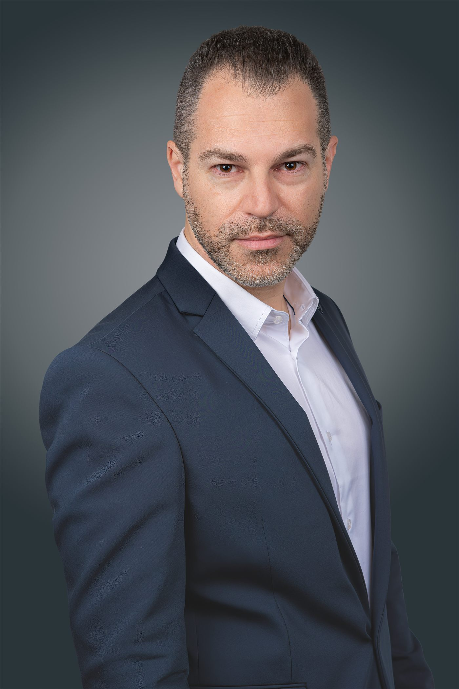
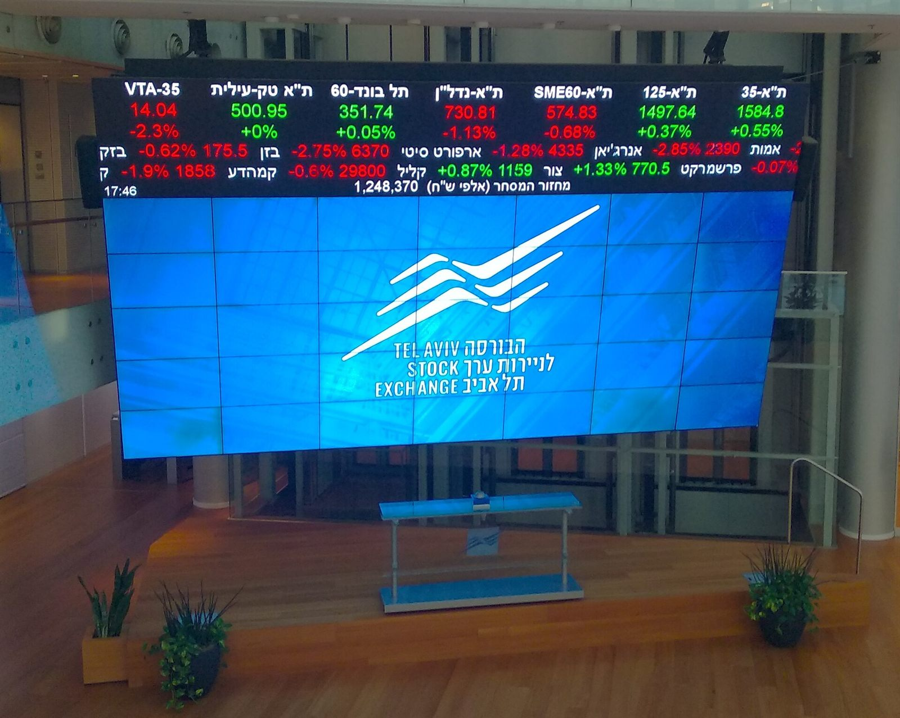
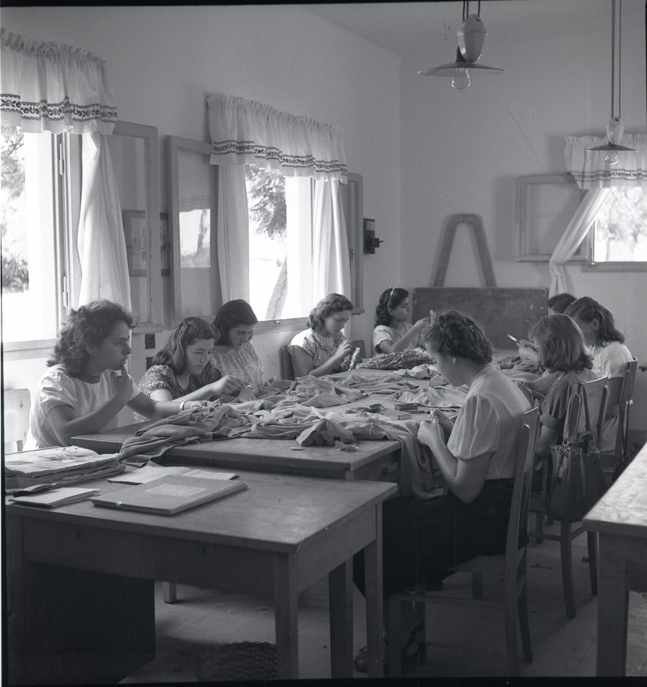
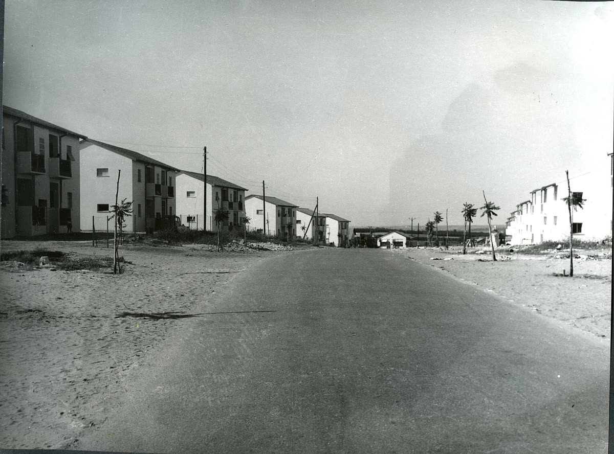
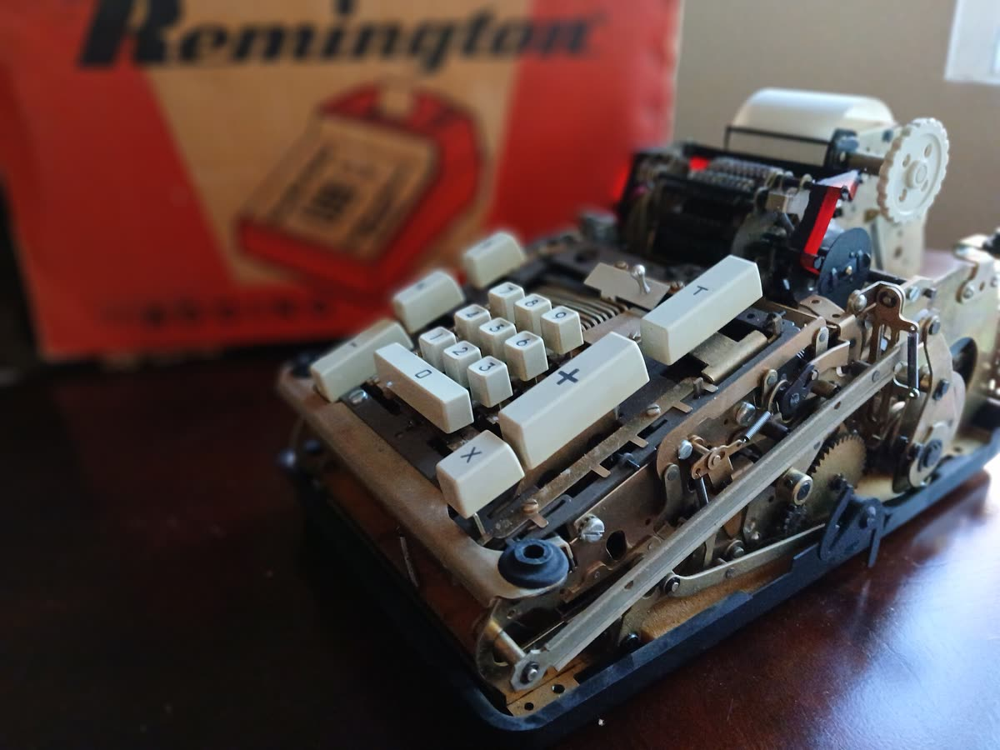
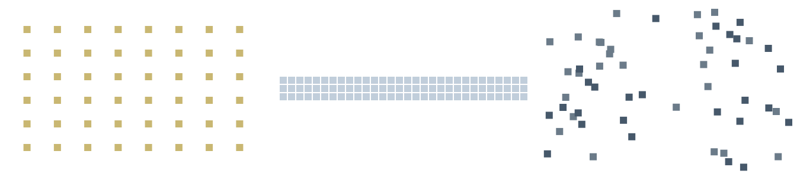
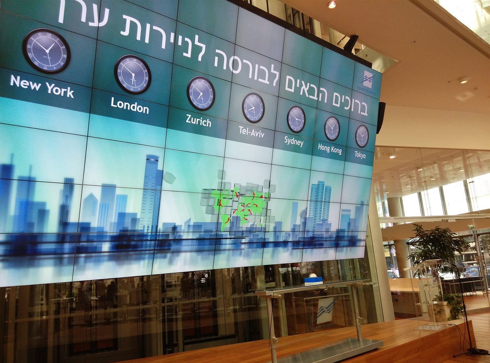

פיקדונות מובנים (סטראקצ'רים)
מוצר השקעה שאנחנו בונים מול בנקים בינלאומיים בחו"ל, ומוסיף לתיק גיוון ויציבות. התשואה נקבעת לפי נכסי הבסיס שנבחרים מראש, עם אפשרויות שונות להגנה על הקרן.

ליווי אישי ומקצועי בהשקעות, בפנסיה, בקרנות השתלמות ובביטוח. למשקיעים, לשכירים, לעצמאים ולחברות.
לשיחת היכרות ללא עלותהפער בין מה שאתם יודעים על הכסף שלכם, לבין מה שצריך לדעת כדי להחליט נכון.
בעולם הפיננסים, ארביטראז' הוא ניצול של פער מחירים: כשאותו נכס נסחר בשני מקומות בשני מחירים שונים, קונים בזול ומוכרים ביוקר, עד שהמחירים מתיישרים והפער נסגר. אצל חוסכים יש פער אחר, פער ידע: בין מה שהם יודעים על הכסף שלהם לבין מה שצריך לדעת כדי להחליט נכון. התפקיד שלי הוא לסגור את הפער הזה, ולהנגיש לכם את הידע כדי שתקבלו החלטות נכונות ומושכלות לעתיד שלכם.
סוחרים קונים בזול ומוכרים ביוקר, המחירים מתיישרים והפער נסגר.
אני מנגיש את הידע, וההחלטה שלכם נשענת על התמונה המלאה.
הסברים בגובה העיניים, מאמרים וכלים, כדי שתבינו מה יש לכם, למה, ומה האפשרויות.
אותו איש מקצוע לאורך שנים, שמכיר את התמונה המלאה ומעדכן אותה כשהחיים משתנים. לא רק ביום החתימה.
שאלה על הדוח השנתי, על משיכה או על שינוי מסלול מקבלת תשובה ברורה, בטלפון או בוואטסאפ.
רישיון סוכן פנסיוני ויותר מחמש עשרה שנים בשוק ההון. כל המלצה נשענת על ניתוח של הנתונים שלכם.


יחד עם הצוות בארביטראז', הליווי לא נגמר בפנסיה ובהשקעות. כל מה שקשור לכסף שלכם, במקום אחד.
מוצר השקעה שאנחנו בונים מול בנקים בינלאומיים בחו"ל, ומוסיף לתיק גיוון ויציבות. התשואה נקבעת לפי נכסי הבסיס שנבחרים מראש, עם אפשרויות שונות להגנה על הקרן.
נדל"ן, קרנות השקעה פרטיות ואפיקים שאינם נסחרים בבורסה, כחלק מפיזור נכון של התיק ולפי רמת הסיכון שלכם.
כיסוי רפואי, כבודה וביטול נסיעה, מותאם ליעד, למשך הטיול ולמצב הבריאותי.
המרת מטבע בעלויות נמוכות, והגנה מתנודות שער לחוסכים, למשקיעים ולעסקים.

בניית תמהיל משכנתא, השוואת הצעות בין בנקים, מיחזור משכנתא קיימת ופתרונות מימון.
מתי לפרוש, איך למשוך, קצבה או הון, ותכנון המס, כדי שהחיסכון ילווה אתכם שנים.

בדיקת זכאות להחזר מס עד שש שנים אחורה, והגשת הבקשה מול רשות המסים.
ליווי בתביעות מול חברות הביטוח וביטוח לאומי, כדי לקבל את מה שמגיע לכם בזמן הכי קשה.
תכנון העברה בין־דורית, עדכון מוטבים בקופות ובביטוחים, ותיאום עריכת צוואה עם עורך דין.
רוב האנשים מגיעים עם כמה קופות, כמה פוליסות ודוחות שנתיים שאף אחד לא קרא. התהליך אוסף הכול לתמונה אחת, ואז הופך אותה לסדר שנשאר.

כל המידע מהמסלקה הפנסיונית ומהגופים, וניתוח של התיק הקיים.
תוכנית אחת לפי המטרות, הטווח ורמת הסיכון שלכם, עם המלצות ברורות.
בקרה קבועה לאורך השנים, ועדכון כשהחיים משתנים.
שמי רועי רומנו, נשוי ואבא לשני בנים. מגיל צעיר אהבתי והתעניינתי בכלכלה ובשוק ההון, וב־2009, אחרי התואר, הפכתי את התחביב למקצוע בחברות מובילות בתחום. בהמשך הוצאתי רישיון סוכן פנסיוני ורישיון לניהול תיקי השקעות (שכיום מותלה מרצון).
ב־2022 יצאתי לדרך עצמאית כשותף בארביטראז', פירמת שותפים לניהול פיננסי, כדי ללוות אנשים שרוצים שהכסף שלהם יעשה יותר, בלי שיצטרכו לעקוב אחרי החדשות הכלכליות כל יום.
תכנון פיננסי טוב לא מתחיל במוצר. הוא מתחיל בהבנה של מי אתם, מה חשוב לכם ולאן אתם רוצים להגיע.
נכנסתי לשוק ההון, בחברות מובילות בתחום
סוכן פנסיוני, וניהול תיקי השקעות (מותלה כיום מרצון)
יצאתי לדרך עצמאית, כשותף בארביטראז'
מספר הרישיון שלי, לבדיקה ברשות שוק ההון
את התמונה הזאת צילמתי בביקור בניו יורק. ברקע, בניין הבורסה לניירות ערך של ניו יורק ברחוב ברוד, ממש בפינת וול סטריט, שעומד שם מאז 1903 ועל חזיתו תלוי דגל ענק.
מולו עומד פסל "הילדה חסרת הפחד" של האמנית קריסטן ויסבל. הפסל הוצב במרץ 2017, ביום האישה הבינלאומי, מול פסל "השור הדוהר", כחלק מקמפיין של חברת ההשקעות סטייט סטריט לקידום נשים בדירקטוריונים. בסוף 2018 הוא הועבר לכאן, פנים אל פנים מול הבורסה.
ילדה קטנה, ידיים על המותניים, מול המוסד הפיננסי הגדול בעולם. בעיניי זה בדיוק העניין: מי שמבין את השוק, לא צריך לפחד ממנו.
שלושה מקרים אמיתיים, בלי שמות. כל לקוח מגיע עם סיפור אחר, אבל המטרה כמעט תמיד זהה: לעשות סדר.
לקוח הגיע אחרי יותר מעשרים שנה אצל אותו איש מקצוע. מבחינתו הכול עבד. בבדיקה מצאנו דמי ניהול גבוהים, מוצרים שכבר לא התאימו לו ותכנון שלא עודכן שנים. לפעמים הבעיה היא לא מה שעשיתם, אלא מה שלא נבדק.
לקוחה החזיקה סכום משמעותי בעו"ש ובפיקדונות, כי פחדה לטעות. במקום לרדוף אחרי השקעות "חמות", בנינו תוכנית לפי המטרות שלה, רמת הסיכון והצורך שלה בנזילות. היום היא יודעת למה מיועד כל שקל.
עובד במקום עבודה חדש חשב שהוא חייב להצטרף לקרן שהמעסיק הציע. עברנו יחד על האפשרויות, בחרנו גוף ומסלול שמתאימים לו ובדקנו כיסויים ודמי ניהול. החלטה אחת בתחילת הדרך משפיעה על עשרות שנים.
”מקצוען אמיתי, תמיד יסודי וסבלני, ומקדיש זמן להסביר כל פרט עד להבנה מלאה.“
עבודה מול מגוון רחב של חברות ביטוח ובתי השקעות מאפשרת להשוות, ולבחור את מה שמתאים לכם.
ידע שעוזר להחליט: מאמרים, כלים לחישוב ומקורות רשמיים לבדיקה עצמית.
הגאות והגלים ההשפעה של שוק ההון על מסלולי ההשקעה שלנו, ולמה כדאי לזכור את 2022 לפני שמעבירים הכול למניות. פורסם בזירת המומחים של הבורסה לניירות ערך בתל אביב, יולי 2024
מה כולל תכנון פנסיוני ופיננסי? איסוף מידע, ניתוח התיק הקיים, תוכנית מותאמת, יישום ההמלצות וליווי לאורך זמן. המטרה היא לבחון את התמונה המלאה, לא מוצר יחיד.
למי מתאים הליווי? למי שרוצה לבחון את הפנסיה, קרנות ההשתלמות, הכיסויים הביטוחיים או כסף פנוי להשקעה, כחלק מתמונה פיננסית אחת. שכירים, עצמאים, מעסיקים ומשקיעים.
האם שיחת ההיכרות עולה כסף? לא. השיחה הראשונה היא ללא עלות וללא התחייבות, כדי להכיר את המצב הקיים ואת המטרות שלכם.
מה צריך להכין לשיחה? לא חובה להכין דבר. אם יש לכם דוחות שנתיים מהקרנות, הם עוזרים. את רוב המידע אפשר לקבל מהמסלקה הפנסיונית, בהרשאה שלכם.
עבדתי שנים עם אותו סוכן. למה לבדוק? כי מוצר שהתאים לפני עשר שנים לא בהכרח מתאים היום. מסלולי השקעה, כיסויים ודמי ניהול צריכים להתעדכן כשהחיים משתנים.
הכלים באתר הם ייעוץ? לא. הם מחשבים לפי הנחות כלליות, כדי לתת סדר גודל. ההתאמה האישית נעשית רק אחרי בדיקה של הנתונים שלכם.
איך מוודאים שלסוכן יש רישיון? במאגר בעלי הרישיון של רשות שוק ההון, ביטוח וחיסכון, לפי שם או מספר. מספר הרישיון שלי הוא 00117164.
איפה אפשר להשוות לבד? באתרי רשות שוק ההון ובאתר האוצר שלי. המידע באתר הזה אינו מחליף התאמה אישית לצרכים ולנתונים שלכם.
השאירו פרטים ואחזור אליכם לתיאום שיחת היכרות, ללא עלות וללא התחייבות. מעדיפים לדבר? 052-8089808 או וואטסאפ. המשרד: אימבר 23, קומה 3, פתח תקווה.